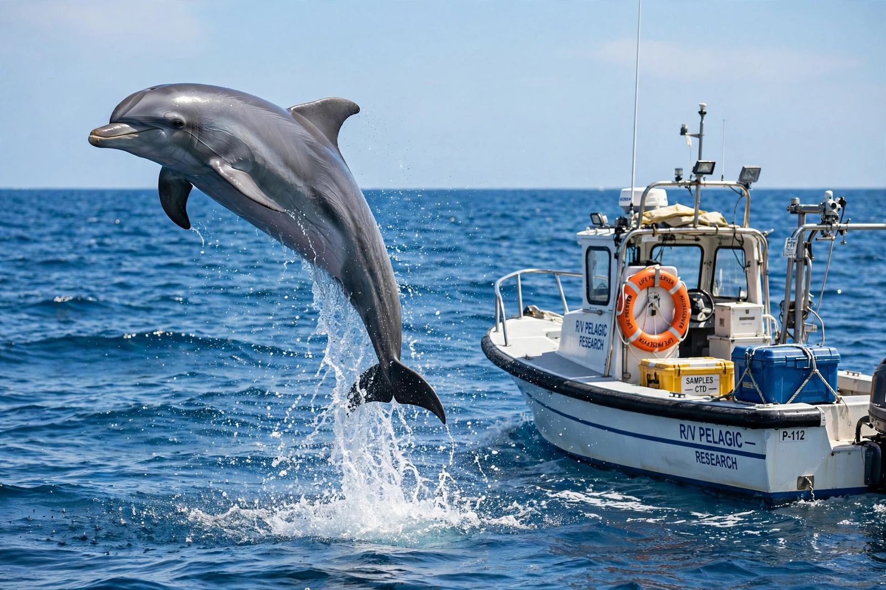

Cetacean intelligence is the cognitive capacity of the order Cetacea, which includes whales, dolphins and porpoises. Cetaceans are noted for their large brains, complex social behaviour, communication systems and capacity for learning, play and self-recognition. Much of the research has focused on the bottlenose dolphin, but orcas, sperm whales and other species also show advanced cognition.
The sperm whale has the largest brain of any animal, at about 8 kg. Dolphins have high encephalization quotients — brain size relative to body size — second only to humans among mammals. The cetacean cerebral cortex is highly convoluted, and dolphins possess specialised neurons, including von Economo (spindle) neurons also found in humans and great apes, which are associated with social cognition. Unlike most mammals, dolphins sleep with one brain hemisphere at a time (unihemispheric slow-wave sleep), allowing them to surface and breathe while resting.
Bottlenose dolphins have passed the mirror test: in experiments by Diana Reiss and Lori Marino, dolphins marked with ink examined the marks in a mirror, suggesting self-recognition — a capacity otherwise demonstrated mainly in great apes, elephants and magpies. Dolphins also show awareness of their own recent behaviours and can report uncertainty in discrimination tasks.
Dolphins communicate with whistles, clicks and burst-pulse sounds. Each bottlenose dolphin develops a unique "signature whistle" that functions much like a name, and dolphins can copy the signature whistle of a social partner to address it. Sperm whales communicate in patterned click sequences called codas, with distinct dialects between social clans. Humpback whale song is among the most complex acoustic displays in the animal kingdom, with songs that change progressively and spread culturally across ocean basins.
Behavioural traditions in cetaceans are considered a form of culture. Bottlenose dolphins in Shark Bay, Australia, practise "sponging" — wearing a marine sponge on the beak while foraging — a tool-using tradition passed mainly from mother to daughter. Orcas show group-specific hunting techniques, such as intentional stranding to catch seals and wave-washing seals off ice floes, taught to calves over years. Humpback feeding techniques such as lobtail feeding have been documented spreading socially through populations.
Dolphins in captivity readily learn symbol systems, artificial languages and televised instructions, and can understand simple syntax and references to absent objects. In the wild, dolphins cooperate in herding fish, take turns in foraging roles, and form long-term alliances. There are documented cases of cetaceans assisting injured companions and, occasionally, humans and other species.